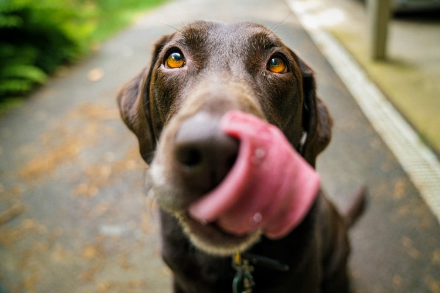

Post #1
Molting is one of the most involved processes of a bird's annual life cycle. Notwithstanding preening and constant care, the marvelously intricate structure of a bird's feather inevitably wears out. All adult birds molt their feathers at least once a year, and upon close observation, one can recognize the frayed, ragged appearance of feathers that are nearing the end of their useful life. Two distinct processes are involved in molting. link amazon. E-mail.